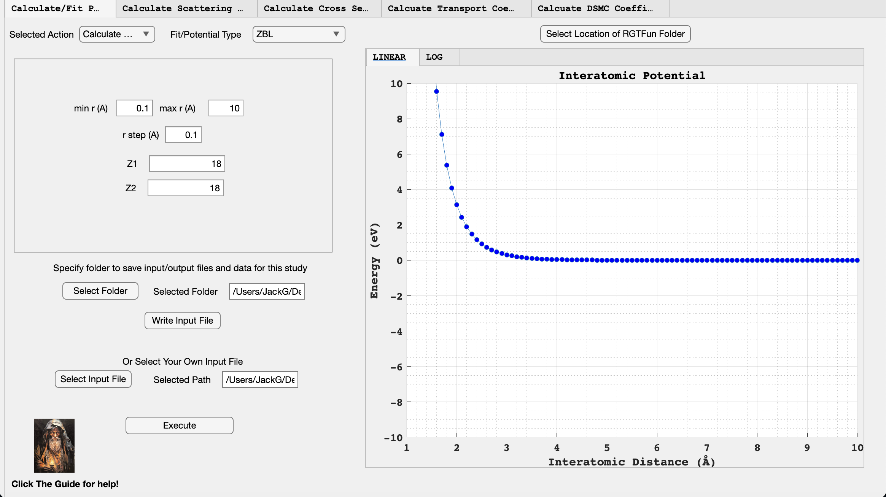
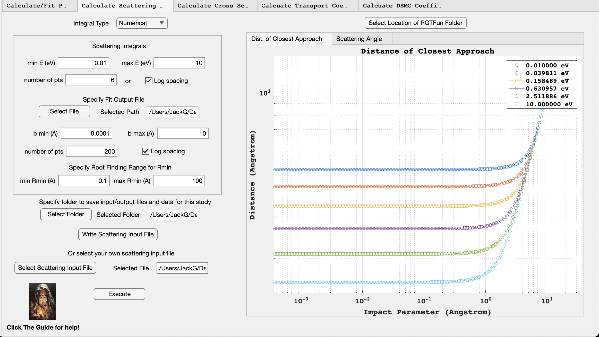
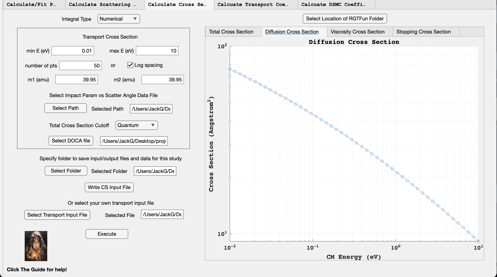
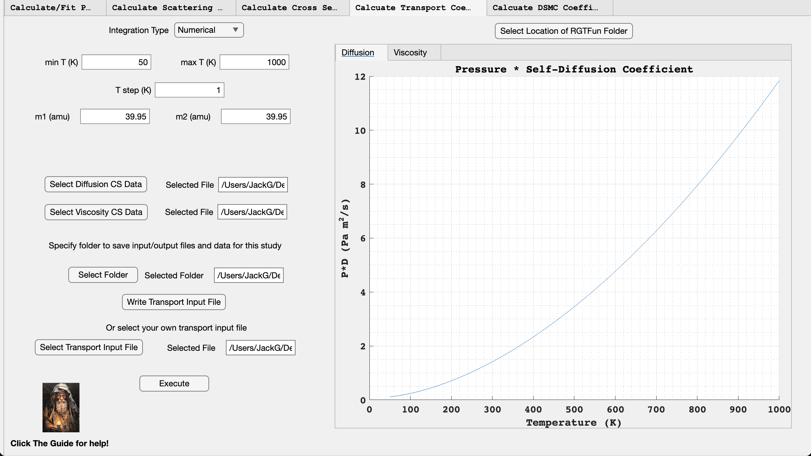
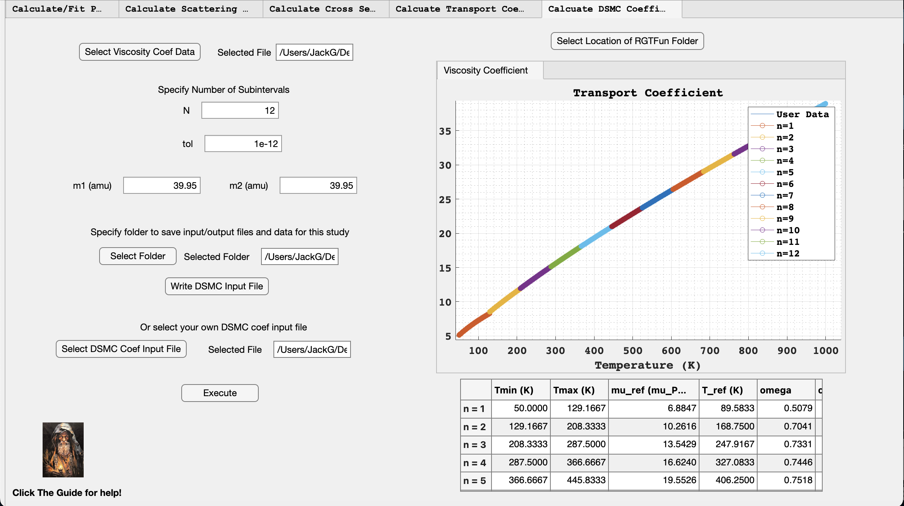

In this documentation we will provide instructions on how to access
RGTFun, an example calculation using RGTFun that can be used as a
tutorial for new users, and then discuss the included testing suite.
Documentation for all functions can be found in the appendix.
Accessing RGTFun
RGTFun can be downloaded from the public Github repository linked
here:
https://github.com/nbb2/rgtfun/tree/paper
Please download all folders from the repository and ensure that they are
all located within a RGTFun folder on your machine (it does not
have to be called RGTFun). This is important because the app
will ask you to select the RGTFun folder on your machine so it can
establish the path to the src and gui folders. It does
not matter where your RGTFun folder is located as long as it is
a local folder, i.e. not in a cloud service. Once downloading the
repository folders, you can start the app by opening the
gui.mlapp file in the gui folder.
An Example
Calculation of Argon-Argon Interaction
We will now present example calculations of transport quanitities and
scattering integrals using RGTFun. The calculations will be performed
for an Argon-Argon ZBL potential.
Calculate/Fit Potential Tab

Screenshot of Calculate/Fit
Potential tab for an Argon-Argon ZBL potential.
The Calculate/Fit Potential tab allows you to either create
your own potential data or fit one of the RGTFun-supported potentials to
your own data. For this example, we wanted to calculate a ZBL potential
for an Argon-Argon interaction. To begin, we selected “Calculate
Potential” from the “Selected Action” drop-down menu. Then, we selected
“ZBL” from the “Fit/Potential Type” drop-down menu. We then specified
the distance values and potential parameters. Then we selected the
folder where RGTFun will save the input/output files and data. We then
clicked “Write Input File” to generate an input file with the potential
parameters specified. This will auto populate the “Or Select Your Own
Input File” box. Lastly, we selected “Execute” to generate potential
data, plot the potential data, save the plot as an image, and save a fit
output file for the data.
Calculate Scattering
Integrals Tab

Screenshot of Calculate Scattering
Intergrals tab for an Argon-Argon ZBL potential.
The Calculate Scattering Integrals tab allows you to
calculate the distance of closest approach (DOCA) and scattering angle
as a function of impact parameter. First, we chose “Numerical” from the
“Integral Type” drop down menu becuase we wanted to use our potential
data from the previous tab. We then specified the energy range for
calculating the quantities. Since we wanted log spacing for the energy
values, we clicked the “Log spacing” box and specifed the number of
points. Note that our fit output file was autopopulated after we clicked
“Execute” in the previous tab. We then specified the impact parameter
range to integrate over and chose to use log spacing for these values.
We then specified a range for the root solver used in the DOCA
calculations. We then clicked “Write Scattering Input File” to write the
input file and clicked “Execute” to generate datasets for the DOCA and
scattering angle, save those data sets to our “study” folder, and save
the figures as images.
Calculate Cross Sections Tab

Screenshot of Calculate Cross
Sections tab for an Argon-Argon ZBL potential.
The Calculate Cross Sections tab allows you to calculate
total cross section, diffusion cross section, viscosity cross section,
and stopping cross section. First, we selected “Numerical” from the
“Integral Type” drop-down, which will use the scattering angle
vs. impact parameter data from the previous tab. While the energy values
from the previous tab autopopulate into this tab, we have increased the
number of energy points from what was used in figure 7 to reduce error
in the trapezoidal integrals used in this tab. We then specified the
atomic mass of Argon in atomic units. Note that the file path of the
scattering angle data was autopopulated when the previous tab was
executed. Then we chose to use a quantum mechanical cutoff for the total
cross section. Then, we clicked “Write CS Input File” to create the
input file for the cross section calculations. Lastly, we clicked
“Execute” to calculate the cross sections, save the data as csv files in
our “study folder”, and save the figures as images.
Calculate Transport
Coefficients Tab

Screenshot of Calculate Transport
Coefficients tab for an Argon-Argon ZBL potential.
The tab allows you to calculate the self-diffusion coefficient and
viscosity coefficient for user-specified temperatures. First, we
selected “Numerical” from the “Integration Type” drop down, which allows
us to use the cross section data from the previous tab. Next, we
specified the temperature range (in Kelvin) that the code should use to
calculate the transport coefficient data. Note that the atomic masses of
the present species, as well as the locations of the cross section data
files, were autopopulated from the previous tab. We then clicked “Write
Transport Input File” to write the input file to our “study” folder.
Lastly, we clicked “Execute” to calculate the self-diffusion and
viscosity coefficient data, save the data as csv files in our “study”
folder, plot the data, and save the plots as images.
Calculate DSMC Coefficients
Tab

Screenshot of Calculate DSMC
Coefficients tab for an Argon-Argon ZBL potential.
The Calculate DSMC Coefficients tab allows the user to
calculate the ω parameter for
the VHS DSMC model. This parameter is calculated by fitting the VHS
diffusion coefficient expression to the user-provided viscosity
coefficient data. Note that the location of our viscosity coefficient
data file was autopopulated upon execution of the previous tab. Next, we
specifed the number of subintervals to split the data into for fitting.
An ω parameter will be
calculated for each subinterval. We also specifed the tolerance for the
fitting. A tolerance of 1e-12 or lower is suggested. Note that the
atomic masses of the present species were autopopulated from the
previous tab. We then clicked “Write DSMC Input File” to write the input
file to our “study folder”. Lastly, we clicked “Execute” to calculate an
ω parameter for each
subinterval of our viscosity coefficient data, as well as a collision
diameter for each subinterval. Our viscosity coefficient data from the
previous tab and the fitted subintervals are plotted. All relevant
quantities are visible in the tab’s table. This table is saved to our
“study” folder.
RGTFun Test Suite
A test suite has been included in the main RGTFun distribution so
that users can verify their version is functioning correctly. Test
functions were written to verify the functionality of all main functions
within RGTFun. The test functions are located in the test
folder within the main RGTFun folder. All test reference data
is located in the testFiles folder. To run the tests, please
change directories to the test folder and load the test
functions in the MATLAB Test Browser. Then run the current suite, and
verify that all tests were executed successfully.
function r0 = DOCAroot(Ec,b,V,rmin,rmax,chebfunpath)
%DOCAROOT Outputs float value for the root of the DOCA equation.% Y=DOCAROOT(EC,B,V,RMIN,RMAX) generates a float value for the root% of the distance of closest approach (DOCA) equation using two% iterations of the CHEBFUN root finding package.%% -- EC must be the the energy in eV.% -- B must be the impact paramter in Angstrom.% -- V must be the potential function handle.% -- RMIN is the lower bound of possible root values in Angstrom.% -- RMAX is the upper bound of possble root values in Angstrom.%% See also GMQUADSCATTERINGANGLE RUN_SCATTERINGINTEGRALS
addpath(chebfunpath)
chebDOCA = chebfun(@(r) doca(r,Ec,b,V),[rmin,rmax]);
ri = max(roots(chebDOCA));
chebDOCA2 = chebfun(@(r) doca(r,Ec,b,V),[0.9*ri,1.1*ri]);
r0 = max(roots(chebDOCA2));
endfunction d = doca(r,Ec,b,V)
%MY_DOCA Ouputs the DOCA equation.% Y=MY_DOCA(R,EC,B,V) generates the DOCA equation.% -- R is a placeholder value for distance.% -- EC must be the energy in eV.% -- B must be the impact parameter in Angstrom.% -- V is the potential function handle.%% See also DOCAROOT
d = r^2 - ((r^2)*V(r)/Ec) - (b^2);
end
function th = GMquadScatteringAngle(V,Ec,b,rm,n)
%GMQUADSCATTERINGANGLE Outputs float scattering angle.% Y=GMQUADSCATTERINGANGLE(V,EC,B,RM,N) generates a float value for the% scattering angle using GM Quadrature.%% -- V must be the potential function handle.% -- EC must be the the energy in eV.% -- B must be the impact paramter in Angstrom.% -- RM is the distance of closest approach in Angstrom.% -- N is the number of trapezoids to use.%% See also DOCAROOT RUN_SCATTERINGINTEGRALS
sum = 0;
for j = 1:(n/2)
anj = cos(((2*((n/2) - j + 1) - 1)/(2*n))*pi);
aj = cos(((2*j - 1)/(2*n))*pi);
gj = ( 1 - (V(rm/aj)/Ec) - ((b^2 * aj^2)/(rm^2)))^(-1/2);
sum = sum + (anj * gj);
end
th = pi * (1 - ((2*b*sum)/(n*rm)));
end
function y = VHScoef(fitT,T_sample,mu_sample,excludeT,vq,tol)
%VHSCOEF Outputs sample visc value and VHS param.% Y=VHSCOEF(FITT,T_SAMPLE,EXCLUDET,VQ,TOL) outputs a reference% viscosity value and VHS parameter omega by fitting the VHS model to% user-specified visocity coefficient data.%% -- FITT must be the interpolated temperature values in K.% -- T_SAMPLE must be the reference temperature value.% -- EXCLUDET must be a logical array of what temp values to use.% -- VQ must be the interpolated viscosity coefficient values with the% same dimension as FITT.% -- TOL must be the fitting tolerance.%% See also RUN_DSMCCOEF
fitcoef = vq;
fitcoef(excludeT) = [];
fitchar = sprintf("(%f)*(T/(%f)).^(a)",mu_sample,T_sample);
ft = fittype(fitchar,dependent="y",...
independent="T",coefficients="a");
coeffit = fit(fitT',fitcoef',ft,'TolFun',tol);
omega = coeffvalues(coeffit);
y = [mu_sample,omega];
end
function y = VHSviscosity(T,omega,T_ref,mu_ref)
%VHSVISCOSITY Outputs float array with viscosity coefficient values.% Y=VHSVISCOSITY(T,OMEGA,T_REF,MU_REF) generates a float array% containing viscosity coefficient value for each value of T using the% VHS model.%% -- T must be a float array of temperature values in K.% -- OMEGA must be the VHS parameter.% -- T_REF must be the reference temp in K.% -- MU_REF must be the reference viscosity value.%% See also RUN_DSMCCOEF
y = mu_ref*(T/T_ref).^omega;
end
function y = VSSalpha(omegavals,m,molar,Tvals,difvals,diams)
%VSSALPHA Outputs VSS param alpha.% Y=VSSALPHA(OMEGAVALS,M,MOLAR,TVALS,DIFVALS,DIAMS) outputs VSS parameter% alpha using reference diffusion coefficient and collision diameter data.%% -- OMEGAVALS must be an array of reference omega values.% -- M must be the mass of a particle in kg.% -- MOLAR must be the molar mass in kg.% -- TVALS must be an array of the reference temperature values in K.% -- DIFVALS must be an array of the reference diffusion coefficient data.% -- DIAMS must be an array of the reference collision diameteres in angstrom.%% See also RUN_VSSCOEF
kb = 1.380649E-23; %J/K
Na = 6.022E23;
rhoD = molar*difvals./(Na*kb*Tvals);
y = ((4*(5-2*omegavals).*rhoD.*(diams.^2))./(3*sqrt(m*kb*Tvals/pi))) - 1;
end
function y = VSScoef(minT,maxT,Tfine,vq,m,omega,P,tol)
%VSSCOEF Outputs VSS params alpha and d.% Y=VSSCOEF(MINT,MAXT,TFINE,VQ,M,OMEGA,P,TOL) outputs VSS parameters% alpha and d by fitting the VSS model to user-specified diffusin% coefficient data.%% -- MINT must be the lower bound of the temp range in K.% -- MAXT mut be the upper bound of the temp range in K.% -- TFINE must be the interpolated temperature values in K.% -- VQ must be the interpolated diffusion coefficient values with the% same dimension as TFINE.% -- M must be the reduced mass of the system in amu.% -- OMEGA must be the VHS param.% -- TOL must be the fitting tolerance.%% See also RUN_DSMCCOEF
kb = 8.617333262E-5; %eV/K
excludeT = ((Tfine < minT) | (Tfine > maxT));
fitcoef = vq;
fitT = Tfine;
fitT(excludeT) = [];
fitcoef(excludeT) = [];
T_sample = 0.5*(minT + maxT);
cref = 2*(2.5-omega)*kb*T_sample/m;
fitchar = sprintf("157377.3718*30000*(a+1)*(pi^0.5)*((%e)*T).*((pi*2*(%e)*T/(%e)).^(%e))/(16*a*gamma(3.5-%e)*(%e)*pi*(d^2)*(%e)^((%e) - 1/2))",...
kb,kb,m,omega,omega,P,cref,omega);
ft = fittype(fitchar,dependent="y",...
independent="T",coefficients=["a""d"]);
coeffit = fit(fitT',fitcoef',ft,'TolFun',tol,'Lower',[0 0],...'Upper',[10 10],'StartPoint',[1 1]);
coefs = coeffvalues(coeffit);
alpha = coefs(1);
d = coefs(2);
y = [alpha,d];
end
function y = VSSconvergence(alphavals,omegavals,m,Tvals,difvals,muref,tol)
%VSSCONVERGENCE Checks least squares convergence of VSS parameters.% Y=VSSCONVERGENCE(ALPHAVALS,OMEGAVALS,M,TVALS,DIFVALS,MUREF,TOL) outputs% TRUE or FALSE depending on if the user-specified least-squares% tolerance is satisfied.%% -- ALPHAVALS must be an array of the alpha values at each reference temperature.% -- OMEGAVALS must be an array of the omega values at each reference% temperature.% -- M must be the mass of a particle in kg.% -- TVALS must be an array of the reference temperature values in K.% -- DIFVALS must be an array of the reference diffusion coefficient data.% -- MUREF must be an array of the reference viscosity coefficient data.% -- TOL must be the user-specified least squares tolerance.% See also RUN_VSSCOEF
kb = 1.380649E-23; %J/K
Na = 6.022E23;
rhoD = m*difvals./(Na*kb*Tvals);
muvals = ((10./alphavals)+5).*rhoD./(21-6*omegavals);
Sc = rhoD./muref; %Schmidt number
LSerror = sum((muvals - muref).^2);
y = (LSerror > tol);
end
function y = VSSdiameter(alphavals,omegavals,m,Tvals,muvals)
%VSSDIAMETER Outputs VSS collision diameter.% Y=VSSDIAMETER(ALPHAVALS,OMEGAVALS,M,TVALS,MUVALS) outputs VSS collision% diamater using reference viscosity coefficient and VHS parameter data.%% -- ALPHAVALS must be an array of the alpha values at each reference temperature.% -- OMEGAVALS must be an array of reference omega values.% -- M must be the mass of a particle in kg.% -- TVALS must be an array of the reference temperature values in K.% -- MUVALS must be an array of the reference viscosity coefficient data.%% See also RUN_VSSCOEF
kb = 1.380649E-23; %J/K
y2 = ((5*(alphavals+1).*(alphavals+2).*sqrt(m*kb*Tvals/pi))./...
(4*alphavals.*(5-2*omegavals).*(7-2*omegavals).*muvals)); % meters
y = sqrt(y2);
end
function y = VSSdiffusion(T,omega,a,d,m,P,T_sample)
%MY_VSSDIFFUSION Outputs float array with diffusion coefficient values.% Y=MY_VSSDIFFUSION(T,OMEGA,A,D,M,P,T_SAMPLE) generates a float array% containing diffusion coefficient value for each value of T using the% VSS model.%% -- T must be a float array of temperature values in K.% -- OMEGA must be the VHS parameter.% -- A must be the alpha VSS parameter.% -- D must be the d VSS parameter.% -- M must be the reduced mass in amu.% -- P must be the pressure in bar.% -- T_SAMPLE must be the reference temp in K.%% See also RUN_DSMCCOEF%kb = 1.380649E-23; %J/K
kb = 8.617333262E-5; %eV/K
cref = 2*(2.5-omega)*kb*T_sample/m;
fprintf('cref is %f\n',cref)
y = 157377.3718*30000*(a+1)*(pi^0.5)*(kb*T).*((pi*2*kb*T/m).^omega)/(16*a*gamma(3.5-omega)*...
P*pi*(d^2)*(cref)^(omega - 0.5));
end
function y = coulombchar(z1)
%COULOMBCHAR Outputs character array with fitting model.% Y=COULOMBCHAR(Z1) generates a char array containing% the Coulomb potential equation with the user-specified Z1.%% -- Z1 must be the integer atomic number of species 1.%% See also RUN_FITPOTENTIAL
eps_naught = 0.005526349406; %e^2 * eV^-1 * Angstrom^-1
Ke = 1/(4*pi*eps_naught);
y = sprintf("(%d)*%i*z2./x",Ke,z1);
end
function y = coulombchar(z1)
%COULOMBCHAR Outputs character array with fitting model.% Y=COULOMBCHAR(Z1) generates a char array containing% the Coulomb potential equation with the user-specified Z1.%% -- Z1 must be the integer atomic number of species 1.%% See also RUN_FITPOTENTIAL
eps_naught = 0.005526349406; %e^2 * eV^-1 * Angstrom^-1
Ke = 1/(4*pi*eps_naught);
y = sprintf("(%d)*%i*z2./x",Ke,z1);
end
function y = diffusion_coef(well_depth,T,m1,m2,d,inttype,data)
%DIFFUSION_COEF Outputs self-diffusion coefficient.% Y=DIFFUSION_COEF(WELL_DEPTH,T,P,M1,M2,D,INTTYPE,DATA) generates a float% array containing a self-diffusion coefficient value for each temperature% using a Lennard_Jones potential (from "Khrapak, S.A. Accurate transport% cross sections for the Lennard-Jones potential. Eur. Phys. J. D 68, 276% (2014)"). Units of self-diffusion coefficient are cm^2 /s.%% -- WELL-DEPTH must be the LJ well-depth in Kelvin.% -- T must be a float array containing temperature values in units of K.% -- P must be the pressure in bar.% -- M1 must be the mass of species 1 in amu.% -- M2 must be the mass of species 2 in amu.% -- D must be the sigma LJ parameter in units of Angstrom.% -- INTTYPE must be a character string specifying if the integral will% be exact or numerical.% -- DATA must be a character string filepath that gives the location of% the cross section data.%% See also RUN_TRANSPORTCS
Tjoul = T.*(1.380649e-23);
mu = (m1*m2)/(m1+m2);
mukg = mu*(1.66054e-27);
dm = d*(1e-10);
Tstar = T/well_depth;
if strcmp(inttype,'Exact LJ')
y = (3*sqrt(2*pi)/16)*((Tjoul).^(3/2))./(((mukg)^(1/2))* ...
((dm)^2)*reduceddifint(Tstar)); %PD in units of Pa * m^2 / selseif strcmp(inttype,'Trapezoidal LJ')
y = (3*sqrt(2*pi)/16)*((Tjoul).^(3/2))./(((mukg)^(1/2))* ...
((dm)^2)*reduceddifquad(Tstar,data)); %PD in units of Pa * m^2 / selse
disp('Invalid Integration Type. Please check input file and try again.')
endendfunction y = reduceddifint(Tstar)
%REDUCEDDIFINT Outputs the reduced diffusion integral.% Y=REDUCEDDIFINT(TSTAR) generates a float array containing a value% for the exact reduced diffusion integral in Khrapak, S.A. Accurate transport% cross sections for the Lennard-Jones potential (2014).%% -- TSTAR is float array containing the reduced temperature values.
y = zeros(size(Tstar));
ct = 1;
for t = Tstar
reddifintegrand = @(x) 0.5*(x.^2).*exp(-x).*diffusioncs(1./(2*t*x));
y(ct) = integral(reddifintegrand,0,Inf);
ct = ct + 1;
endendfunction y = reduceddifquad(Tstar,data)
%REDUCEDDIFQUAD Outputs the reduced diffusion integral using quadrature.% Y=REDUCEDDIFQUAD(TSTAR,DATA) generates a float array containing a value% for the reduced diffusion integral in Khrapak, S.A. Accurate transport% cross sections for the Lennard-Jones potential (2014) using trapezoidal% integration.%% -- TSTAR is float array containing the reduced temperature values.% -- DATA is a char array containing the filepath of the cross-section% data.
y = zeros(size(Tstar));
ct = 1;
csdata = readmatrix(data);
for t = Tstar
X = 1./(2*t*csdata(:,1));
reddifintegrand = -0.25*(X.^2).*exp(-X).*csdata(:,2)./(t*csdata(:,1).^2);
y(ct) = trapz(csdata(:,1),reddifintegrand);
ct = ct + 1;
endend
function y = diffusioncs(beta)
%DIFFUSIONCS Outputs float array with diffusion cross-section values.% Y=DIFFUSIONCS(BETA) generates a float array containing diffusion% cros-section value for each value of the scattering parameter beta% using a Lennard_Jones potential.%% -- BETA must be a float array containing values for the dimensionless% scattering parameter.%% See also VISCOSITYCS RUN_TRANSPORTCS
fLEd = 1 - 0.019.*(beta.^(-1)) + 0.038.*(beta.^(-2)) - 0.049.*(beta.^(-3)) ...
+ 0.015.*(beta.^(-4));
fHEd = 1 - 0.692.*(beta) + 9.594.*(beta.^(2)) - 8.284.*(beta.^(3)) ...
- 2.355.*(beta.^(4));
y = zeros(size(beta));
%%Case 1: beta < 0.506
idx1 = beta < 0.506;
y(idx1) = 4.507.*(beta(idx1).^(1/6)).*fHEd(idx1);
%%Case 2: beta > 0.506
idx2 = beta > 0.506;
y(idx2) = 9.866.*(beta(idx2).^(1/3)).*fLEd(idx2);
end
function y = difscatter(z1,z2,theta,E)
%DIFSCATTER Outputs differential scattering cross section.% Y=DIFSCATTER(Z1,Z2,THETA,E) generates a float array containing% a differential scattering cross section value for each scattering% angle using the Rutherford scattering model. Units of differential% scattering cross section are Angstrom^2 / sr.%% -- Z1 must be the integer atomic number of species 1.% -- Z2 must be the integer atomic number of species 2.% -- THETA must be the float array containing scattering angle values in% units of radians.% -- E must be the incident energy as numeric char in units of eV.%% See also RUN_SCATTERINGINTEGRALS
eps_naught = 0.005526349406; %e^2 * eV^-1 * Angstrom^-1
Ke = 4*pi*eps_naught;
y = (z1*z2./(4*Ke*E.*sin(theta/2).^2)).^2;
end
function y = distclose(z1,z2,b,E)
%DISTCLOSE Outputs distance of closest approach.% Y=DISTCLOSE(Z1,Z2,B,E) generates a float array containing an% impact parameter value for each scattering angle using the% Rutherford scattering model. Units of distance of closest approach% are Angstroms.%% -- Z1 must be the integer atomic number of species 1.% -- Z2 must be the integer atomic number of species 2.% -- B must be the float array containing impact parameter values in% units of Angstroms.% -- E must be the incident energy as numeric char in units of eV.%% See also RUN_SCATTERINGINTEGRALS
eps_naught = 0.005526349406; %e^2 * eV^-1 * Angstrom^-1
Ke = 1/(4*pi*eps_naught);
gamma = (Ke*z1*z2/E);
y = 0.5*(gamma+sqrt(gamma^2 + 4*(b.^2)));
end
function y = impact(z1,z2,theta,E)
%IMPACT Outputs impact parameter.% Y=IMPACT(Z1,Z2,THETA,E) generates a float array containing an% impact parameter value for each scattering angle using the% Rutherford scattering model. Units of impact parameter are Angstrom.%% -- Z1 must be the integer atomic number of species 1.% -- Z2 must be the integer atomic number of species 2.% -- THETA must be the float array containing scattering angle values in% units of radians.% -- E must be the incident energy as numeric char in units of eV.%% See also RUN_SCATTERINGINTEGRALS
eps_naught = 0.005526349406; %e^2 * eV^-1 * Angstrom^-1
Ke = 4*pi*eps_naught;
y = z1*z2.*cot(theta/2)./(2*Ke*E);
end
function y = lj_124(eps_well,sig,r)
%LJ_124 Outputs Lennard Jones potential data.% Y=LJ_124(EPS_WELL,SIG,R) generates a float array containing% a potential energy value for each r value using the 12-4 Lennard Jones% potential. Units of potential energy are eV.%% -- EPS_WELL must be the float LJ well depth.% -- SIGMA must be the float distance at which the potential is zero.% -- R must be the numerical array containing r values in units of% Angstrom.%% See also RUN_CALCPOTENTIAL
y = (0.5)*(3^1.5)*eps_well*(((sig./r).^12)-((sig./r).^4));
end
function y = lj_126(eps_well,sig,r)
%LJ_126 Outputs Lennard Jones potential data.% Y=LJ_126(EPS_WELL,SIG,R) generates a float array containing% a potential energy value for each r value using the 12-6 Lennard Jones% potential. Units of potential energy are eV.%% -- EPS_WELL must be the float LJ well depth.% -- SIGMA must be the float distance at which the potential is zero.% -- R must be the numerical array containing r values in units of% Angstrom.%% See also RUN_CALCPOTENTIAL
y = 4*eps_well*(((sig./r).^12)-((sig./r).^6));
end
function th = magicscatter(Ec,b,V,rm,z1,z2)
%MAGICSCATTER Outputs float value for the scattering angle from the Magic Formula.% Y=MAGICSCATTER(EC,B,V,RMIN,Z1,Z2) generates a float value for the% scattering angle using the Magic Formula.%% -- EC must be the the energy in eV.% -- B must be the impact parameter in Angstrom.% -- V must be the potential function handle.% -- RMIN is the distance of closest approach in Angstrom.% -- Z1 is the atomic number of species 1.% -- Z2 is the atomic number of species 2.%% See also RUN_SCATTERINGINTEGRALS
m1 = 1.008; %this needs to be updated for each run!!
m2 = 1.008; %this needs to be updated for each run!!
a = (0.46850)/(z1^(0.23) + z2^(0.23));
epschar = (a*Ec)/(z1*z2*14.4);
Vprmin = zblderivative(z1,z2,rm);
thArg = (Bvar(b,a) + Rcvar(rhovar(Ec,V(rm),Vprmin),a) + ...
Deltavar(epschar,Bvar(b,a),R0var(rm,a)))/(R0var(rm,a) + Rcvar(rhovar(Ec,V(rm),Vprmin),a));
th = 2*acos(thArg);
disp(th)
endfunction y = Bvar(b,a)
y = b/a;
endfunction y = Rcvar(rhovar,a)
y = rhovar/a;
endfunction y = rhovar(E,Vrmin,Vprmin)
y = -2*(E-Vrmin)/Vprmin;
endfunction y = R0var(rmin,a)
y = rmin/a;
endfunction y = Deltavar(epschar,Bvar,R)
C1 = 0.9923;
C2 = 0.01162;
C3 = 0.007122;
C4 = 9.307;
C5 = 14.81;
alpha = 1 + C1/sqrt(epschar);
beta = (C2 + sqrt(epschar))/(C3 + sqrt(epschar));
A =2*alpha*epschar*(Bvar^beta);
gammavar = (C4 + epschar)/(C5 + epschar);
G = gammavar/(sqrt(1+A^2)-A);
y = A*(R-Bvar)/(1+G);
end
function y = morse(rm,eps_well,k,r)
%MORSE Outputs MORSE potential data.% Y=MORSE(RM,EPS_WELL,K,R) generates a float array containing% a potential energy value for each r value using the Morse potential.% Units of potential energy are eV.%% -- RM must be the float distance at which the potential is at a minimum.% -- EPS_WELL must be the float Morse well depth.% -- K must be the force constant at the well minimum in units of eV/Angstrom^2.% -- R must be the numerical array containing r values in units of% Angstrom.%% See also RUN_CALCPOTENTIAL
a = sqrt(k/(2*eps_well));
y = eps_well*(exp(-2*a.*(r-rm))-2*exp(-a.*(r-rm)));
end
function y = numdiffusioncoef(Tvals,m1,m2,csdatafile)
%NUMDIFFUSIONCOEF Outputs float array with diffusion coefficient values.% Y=NUMDIFFUSIONCOEF(TVALS,M1,M2,P,CSDATAFILE) generates a float array% containing self-diffusion coefficient value for each value of Tvals by]% using trapezoidal integration.%% -- TVALS must be an array of temperatures in Kelvin.% -- M1 must be mass in amu.% -- M2 must be mass in amu.% -- CSDATAFILE must be location of diffusion cross section data file.%% See also NUMDIFFUSIONCS RUN_TRANSPORTCS
kb = 8.617333262E-5; %eV/K
mred = m1*m2/(m1+m2);
csdata = readmatrix(csdatafile);
Evals = csdata(:,1); %eV
csvals = csdata(:,2); %A^2
amu_to_kg = 1/(6.022e26);
ev_to_j = 1.60218e-19;
a_to_m = 1e-10;
atomic_to_si = (amu_to_kg^(-1/2))*(ev_to_j^(3/2))*(a_to_m^(-2));
y = atomic_to_si*(3/8)*((2*pi/mred)^(0.5))*((kb*Tvals).^(3/2)).*(1./(reddifquad(Tvals,Evals,csvals))); %PD in units of Pa * m^2 / sendfunction y = reddifquad(Tvals,Evals,csvals)
kb = 8.617333262E-5; %eV/K
y = zeros(size(Tvals));
ct = 1;
for T = Tvals
reddifintegrand = ((kb*T).^(-3)).*exp(-Evals/(kb*T)).*(Evals.^2).*csvals;
y(ct) = trapz(Evals,reddifintegrand);
fprintf('T = %f, omega = %f',T,y(ct)*0.5)
ct = ct + 1;
endend
function y = numdiffusioncs(bvals,th)
%NUMDIFFUSIONCS Outputs diffusion cross-section value.% Y=NUMDIFFUSIONCS(SCATTERDATAFILE) generates diffusion cross-section% value by integrating scattering angle vs impact param data for a% specific energy using TRAPZ.%% -- SCATTERDATAFILE must be the filepath to the scattering angle vs% impact para data.%% See also RUN_TRANSPORTCS
difcsintegrand = 2*pi*(1-cos(th)).*bvals;
y = trapz(bvals,difcsintegrand);
end
function y = numstoppingcs(E,m1,m2,diffusioncs)
%NUMSTOPPINGCS Outputs stopping cross-section value.% Y=NUMSTOPPINGCS(SCATTERDATAFILE) generates a stopping cross-section% value using diffusion cs value, masses, and energy.%% -- E must be energy in eV.% -- M1 must be the mass of species 1 in amu.% -- M2 must be the mass of species 2 in amu.% -- DIFFUSIONCS must be diffusion CS value for energy E.%% See also RUN_TRANSPORTCS
yCM = 2*(m1*m2/(m1+m2)^2)*E*diffusioncs;
CMtoLab = (m1+m2)/m2;
y = yCM*CMtoLab;
end
function y = numtotalcs(th_max,bvals,th)
%NUMTOTALCS Outputs total cross-section value.% Y=NUMTOTALCS(SCATTERDATAFILE) generates a total cross-section value% for a specific energy by finding the intersection of TH_MAX and the% scattering angle vs impact parameter curve.%% -- TH_MAX must be the angle in radians used to determine total CS.% -- SCATTERDATAFILE must be the filepath to the scattering angle vs% impact para data.%% See also RUN_TRANSPORTCS
bfine = min(bvals):0.00001:max(bvals);
th_p = th - th_max;
vqth = interp1(bvals,th_p,bfine);
bmax = max(data_zeros(bfine,vqth));
y = pi*bmax^2;
endfunction x0 = data_zeros(x, y)
% Identify indices where there is a sign change between consecutive elements
zero_crossings = find((y(1:end-1) .* y(2:end)) <= 0);
% Preallocate for the zero-crossing points
x0 = NaN(length(zero_crossings), 1);
% Loop through each detected zero-crossing for interpolationfor k = 1:length(zero_crossings)
% Indices for interpolation points
idx1 = zero_crossings(k);
idx2 = idx1 + 1;
% Linear interpolation between the points around zero-crossing
b = [1, x(idx1); 1, x(idx2)] \ [y(idx1); y(idx2)];
x0(k) = -b(1) / b(2); % Solving for x at y = 0end
x0 = x0(~isnan(x0));
end
function y = numtotalcscheb(th_max,bvals,th)
%NUMTOTALCSCHEB Outputs total cross-section value.% Y=NUMTOTALCSCHEB(SCATTERDATAFILE) generates a total cross-section value% for a specific energy by finding the intersection of TH_MAX and the% scattering angle vs impact parameter curve using Chebfun rootfinding.%% -- TH_MAX must be the angle in radians used to determine total CS.% -- SCATTERDATAFILE must be the filepath to the scattering angle vs% impact para data.%% See also RUN_TRANSPORTCS
th_p = th - th_max;
p = spline(bvals,th_p);
poly = @(r) ppval(p,r);
chebtotalcs = chebfun(poly,[min(bvals),max(bvals)]);
bmax = max(roots(chebtotalcs));
y = pi*bmax^2;
end
function y = numvisccoef(Tvals,m1,m2,csdatafile)
%NUMVISCCOEF Outputs float array with viscosity coefficient values.% Y=NUMVISCCOEF(TVALS,M1,M2,CSDATAFILE) generates a float array% containing viscosity coefficient value for each value of Tvals by using% trapezoidal integration.%% -- TVALS must be an array of temperatures in Kelvin.% -- M1 must be mass in amu.% -- M2 must be mass in amu.% -- CSDATAFILE must be location of viscosity cross section data file.%% See also NUMDIFFUSIONCOEF RUN_TRANSPORTCS
kb = 8.617333262E-5; %eV/K
mred = m1*m2/(m1+m2);
csdata = readmatrix(csdatafile);
Evals = csdata(:,1); %eV
csvals = csdata(:,2); %A^2% note that the 0.001629989 below is a unit conversion factor that converts% [amu^0.5 * Angstrom^-2 * eV^0.5] --> [kg^0.5 * m^-2 * Joules^0.5]
y = (1E6)*0.001629989*(5/4)*((2*pi*mred)^(0.5))*((kb*Tvals).^(1/2)).*(1./(redviscquad(Tvals,Evals,csvals))); %microPa sendfunction y = redviscquad(Tvals,Evals,csvals)
kb = 8.617333262E-5; %eV/K
y = zeros(size(Tvals));
ct = 1;
for T = Tvals
redviscintegrand = ((kb*T).^(-4)).*exp(-Evals/(kb*T)).*(Evals.^3).*csvals;
y(ct) = trapz(Evals,redviscintegrand);
ct = ct + 1;
endend
function y = numvisccs(bvals,th)
%NUMVISCCS Outputs viscosity cross-section value.% Y=NUMVISCCS(SCATTERDATAFILE) generates a viscosity cross-section% value by integrating scattering angle vs impact param data for a% specific energy using TRAPZ.%% -- SCATTERDATAFILE must be the filepath to the scattering angle vs% impact para data.%% See also RUN_TRANSPORTCS
difcsintegrand = 2*pi*(1-cos(th).^2).*bvals;
y = trapz(bvals,difcsintegrand);
end
function y = powerlaw(a,k,r)
%POWERLAW Outputs power law potential data.% Y=POWERLAW(A,K,R) generates a float array containing a potential% energy value for each r value using the basic power law potential.% Units of potential energy are eV.%% -- A is the first power law coefficient.% -- K is the exponent power law coefficient.% -- R must be the numerical array containing r values in units of% Angstrom.%% See also RUN_CALCPOTENTIAL
y = a*r.^(-k);
end
function y = run_calcpotential(filepath,datafilepath)
%RUN_CALCPOTENTIAL Reads input file and generates potential data.% RUN_CALCPOTENTIAL(FILEPATH,DATAFILEPATH) reads the user-specified input% file, generates potential data using the appropriate potential% function, and saves the data to a user-specified folder.%% -- FILEPATH must specify the path to where input file is.% -- DATAFILEPATH must specify where to save the potential data.%% See also COULOMB LJ_126 LJ_124 ZBL POWERLAW MORSE
run(filepath);
r = minR:Rstep:maxR;
if strcmp(Potential_Type,"Coulomb")
data = coulomb(Z1,Z2,r);
datapath = fullfile(datafilepath,'/coulombdata.csv');
A = [r' data'];
writematrix(A,datapath);
y = datapath;
elseif strcmp(Potential_Type,"12-6 Lennard-Jones")
data = lj_126(eps_well,sig,r);
datapath = fullfile(datafilepath,'/126ljdata.csv');
A = [r' data'];
writematrix(A,datapath);
y = datapath;
elseif strcmp(Potential_Type,"12-4 Lennard-Jones")
data = lj_124(eps_well,sig,r);
datapath = fullfile(datafilepath,'/124ljdata.csv');
A = [r' data'];
writematrix(A,datapath);
y = datapath;
elseif strcmp(Potential_Type,"ZBL")
data = zbl(Z1,Z2,r);
datapath = fullfile(datafilepath,'/zbldata.csv');
A = [r' data'];
writematrix(A,datapath);
y = datapath;
elseif strcmp(Potential_Type,"Morse")
data = morse(rm,eps_well,k,r);
datapath = fullfile(datafilepath,'/morsedata.csv');
A = [r' data'];
writematrix(A,datapath);
y = datapath;
elseif strcmp(Potential_Type,"Power Law")
data = powerlaw(a,k,r);
datapath = fullfile(datafilepath,'/powerlawdata.csv');
A = [r' data'];
writematrix(A,datapath);
y = datapath;
endend
function y = run_transportcoefs(filepath,datafilepath)
%RUN_TRANSPORTCOEFS Reads transport input file and calculates transport coefs.% RUN_TRANSPORTCOEFS(FILEPATH,DATAFILEPATH) reads the user-specified% transport parameters from the transport input file and calculates the% self-diffusion or viscosity coefficient.%% -- FILEPATH must specify the path to where input file is.% -- DATAFILEPATH must specify where to save the coef data.%% See also DIFFUSIONCOEF VISCCOEF NUMDIFFUSIONCOEF NUMVISCCOEF%disp(filepath)
run(filepath);
Tvals = minT:Tstep:maxT;
if strcmp(inttype,'Exact LJ') | strcmp(inttype,'Trapezoidal LJ')
difcoef = diffusion_coef(welldepth,Tvals,m1,m2,d,inttype,diffusiondatafile);
diffusioncoefdatapath = fullfile(datafilepath,'/diffusioncoefdata.csv');
A = [Tvals' difcoef'];
writematrix(A, diffusioncoefdatapath);
viscositycoef = visc_coef(welldepth,Tvals,m1,m2,d,inttype,viscositydatafile);
visccoefdatapath = fullfile(datafilepath,'/viscositycoefdata.csv');
B = [Tvals' viscositycoef'];
writematrix(B, visccoefdatapath);
y = datafilepath;
elseif strcmp(inttype,'Numerical')
diffusioncoef = numdiffusioncoef(Tvals,m1,m2,diffusiondatafile);
diffusioncoefdatapath = fullfile(datafilepath,'/diffusioncoefdata.csv');
A = [Tvals' diffusioncoef'];
writematrix(A, diffusioncoefdatapath);
visccoef = numvisccoef(Tvals,m1,m2,viscositydatafile);
visccoefdatapath = fullfile(datafilepath,'/viscositycoefdata.csv');
B = [Tvals' visccoef'];
writematrix(B, visccoefdatapath);
coefdatapath = datafilepath;
y = coefdatapath;
endend
function y = run_vsscoef(inputfile,datapath)
%RUN_VSSCOEF Reads VSS coef input file and calculates VSS params.% RUN_DSMCCOEF(INPUTFILE,DATAPATH) reads the user-specified parameters% from the input file and calculates DSMC params for the VSS% model.%% -- INPUTFILE must specify the path to where input file is.% -- DATAFILEPATH must specify where to save the param table.%% See also VSSALPHA VSSDIAMETER VSSCONVERGENCE
y = datapath;
run(inputfile);
%mr = m1*m2/(m1+m2);
mr = m1;
mrkg = mr/(6.022E26);
molarkg = mr/(1E3);
difcoefdata = readmatrix(diffusiondatafile);
vhscoefdata = readmatrix(vhstablefile);
viscvals = vhscoefdata(:,3)*(1E-6);
omegavals = vhscoefdata(:,5);
alphavals = alphaguess*ones(length(omegavals),1);
Tvals = vhscoefdata(:,4);
difcoef = difcoefdata(:,2);
difcoef_T = difcoefdata(:,1);
dif_sample = interp1(difcoef_T, difcoef, Tvals);
max_iter = 100;
iter = 0;
while VSSconvergence(alphavals,omegavals,molarkg,Tvals,dif_sample,viscvals,tol) && iter < max_iter
diams = VSSdiameter(alphavals,omegavals,mrkg,Tvals,viscvals);
newalpha = VSSalpha(omegavals,mrkg,molarkg,Tvals,dif_sample,diams);
alphavals = newalpha;
iter = iter + 1;
endif iter == max_iter
warning('Reached maximum number of iterations without convergence.');
end
diams = VSSdiameter(alphavals,omegavals,mrkg,Tvals,viscvals);
diams_angstrom = diams*(1E10);
A = [Tvals alphavals diams_angstrom];
vssdatapath = fullfile(datapath,'/VSScoeftable.csv');
A = array2table(A,'VariableNames',{'Reference Temp (K)', 'alpha','collision_diam'});
disp(A)
writetable(A,vssdatapath);
end
function y = visc_coef(well_depth,T,m1,m2,d,inttype,data)
%VISC_COEF Outputs viscosity coefficient.% Y=VISC_COEF(WELL_DEPTH,T,M1,M2,D,INTTYPE,DATA) generates a float% array containing a viscosity coefficient value for each temperature% using a Lennard_Jones potential (from "Khrapak, S.A. Accurate transport% cross sections for the Lennard-Jones potential. Eur. Phys. J. D 68, 276% (2014)"). Units of viscosity coefficient are micro-Pascal*s.%% -- WELL-DEPTH must be the LJ well-depth in Kelvin.% -- T must be a float array containing temperature values in units of K.% -- M1 must be the mass of species 1 in amu.% -- M2 must be the mass of species 2 in amu.% -- D must be the sigma LJ parameter in units of Angstrom.% -- INTTYPE must be a character string specifying if the integral will% be exact or numerical.% -- DATA must be a character string filepath that gives the location of% the cross section data.%% See also RUN_TRANSPORTCS
Tjoul = T.*(1.380649e-23);
mu = (m1*m2)/(m1+m2);
mukg = mu*(1.66054e-27);
dm = d*(1e-10);
Tstar = T/well_depth;
if strcmp(inttype,'Exact LJ')
y = (1e6)*(5*sqrt(2*pi)/8)*(((mukg)^(1/2))*(Tjoul).^(1/2))./(((dm)^2) ...
*reducedviscint(Tstar));
elseif strcmp(inttype,'Trapezoidal LJ')
y = (1e6)*(5*sqrt(2*pi)/8)*(((mukg)^(1/2))*(Tjoul).^(1/2))./(((dm)^2) ...
*reducedviscquad(Tstar,data));
else
disp('Invalid Integration Type. Please check input file and try again.')
endendfunction y = reducedviscint(Tstar)
%REDUCEDVISCINT Outputs the reduced viscosity integral.% Y=MY_REDUCEDVISCINT(TSTAR) generates a float array containing a value% for the exact reduced viscosity integral in Khrapak, S.A. Accurate% transport cross sections for the Lennard-Jones potential (2014).%% -- TSTAR is float array containing the reduced temperature values.
y = zeros(size(Tstar));
ct = 1;
for t = Tstar
redviscintegrand = @(x) 0.5*(x.^3).*exp(-x).*viscositycs(1./(2*t*x));
y(ct) = integral(redviscintegrand,0,Inf);
ct = ct + 1;
endendfunction y = reducedviscquad(Tstar,data)
%REDUCEDVISCQUAD Outputs the reduced viscosity integral using quadrature.% Y=MY_REDUCEDVISCQUAD(TSTAR,DATA) generates a float array containing a value% for the reduced viscosity integral in Khrapak, S.A. Accurate transport% cross sections for the Lennard-Jones potential (2014) using trapezoidal% integration.%% -- TSTAR is float array containing the reduced temperature values.% -- DATA is a char array containing the filepath of the cross-section% data.
y = zeros(size(Tstar));
ct = 1;
csdata = readmatrix(data);
for t = Tstar
X = 1./(2*t*csdata(:,1));
redviscintegrand = -0.25*(X.^3).*exp(-X).*csdata(:,2)./(t*csdata(:,1).^2);
y(ct) = trapz(csdata(:,1),redviscintegrand);
ct = ct + 1;
endend
function y = viscositycs(beta)
%VISCOSITYCS Outputs float array with viscosity cross-section values.% Y=VISCOSITYCS(BETA) generates a float array containing viscosity% cros-section value for each value of the scattering parameter beta% using a Lennard_Jones potential.%% -- BETA must be a float array containing values for the dimensionless% scattering parameter.%% See also DIFFUSIONCS RUN_TRANSPORTCS
fLEeta = 1;
fHEeta = 1 - 2.229.*(beta) + 35.967.*(beta.^(2)) - 86.490.*(beta.^(3)) ...
+ 60.335.*(beta.^(4));
y = zeros(size(beta));
%%Case 1: beta < 0.491
idx1 = beta < 0.491;
y(idx1) = 3.599.*(beta(idx1).^(1/6)).*fHEeta(idx1);
%%Case 2: beta > 0.491
idx2 = beta > 0.491;
y(idx2) = 7.480.*(beta(idx2).^(1/3))*fLEeta;
end
function y = zbl(z1,z2,r)
%ZBL Outputs ZBL potential data.% Y=ZBL(Z1,Z2,R) generates a float array containing% a potential energy value for each r value using the ZBL potential.% Units of potential energy are eV.%% -- Z1 must be the integer atomic number of species 1.% -- Z2 must be the integer atomic number of species 2.% -- R must be the numerical array containing r values in units of% Angstrom.%% See also RUN_CALCPOTENTIAL
eps_naught = 0.005526349406; %e^2 * eV^-1 * Angstrom^-1
Ke = 4*pi*eps_naught;
a = (0.46850)/(z1^(0.23) + z2^(0.23));
y = phi(r/a).*z1*z2./(Ke.*r);
endfunction y = phi(x)
y = 0.18175*exp(-3.19980*x) + 0.50986*exp(-0.94229*x) + ...
0.28022*exp(-0.40290*x) + 0.02817*exp(-0.20162*x);
end
function y = zblchar(z1)
%ZBLCHAR Outputs character array with fitting model.% Y=ZBLCHAR(Z1) generates a char array containing the ZBL potential% equation with the user-specified Z1.%% -- Z1 must be the integer atomic number of species 1.%% See also RUN_FITPOTENTIAL
eps_naught = 0.005526349406; %e^2 * eV^-1 * Angstrom^-1
Ke = 1/(4*pi*eps_naught);
a = sprintf('(0.46850)/((%i)^(0.23) + z2^(0.23))',z1);
phi1 = sprintf('0.18175*exp(-3.19980*x/(%s)) + 0.50986*exp(-0.94229*x/(%s))',a,a);
phi2 = sprintf('0.28022*exp(-0.40290*x/(%s)) + 0.02817*exp(-0.20162*x/(%s))',a,a);
phi = [phi1 '+' phi2];
y = sprintf("(%d)*(%s)*%i*z2./x",Ke,phi,z1);
end
function y = zblderivative(z1,z2,r)
%ZBLDERIVATIVE Outputs the derivative of a ZBL potential.% Y=ZBLDERIVATIVE(Z1,Z2,R) generates a float array containing% the derivative of the potential energy for each r value using the ZBL potential.% Units of potential energy are eV.%% -- Z1 must be the integer atomic number of species 1.% -- Z2 must be the integer atomic number of species 2.% -- R must be the numerical array containing r values in units of% Angstrom.%% See also RUN_CALCPOTENTIAL
eps_naught = 0.005526349406; %e^2 * eV^-1 * Angstrom^-1
k = 1/(4*pi*eps_naught);
a = (0.46850)/(z1^(0.23) + z2^(0.23));
y = (-k*z1*z2./(r.^2))*(0.18175*exp(-3.19980*r/a) + 0.50986*exp(-0.94229*r/a) + ...
0.28022*exp(-0.40290*r/a) + 0.02817*exp(-0.20162*r/a)) + ...
(k*z1*z2./(r*a))*((0.18175*-3.19980)*exp(-3.19980*r/a) + (0.50986*-0.94229)*exp(-0.94229*r/a) + ...
(0.28022*-0.40290)*exp(-0.40290*r/a) + (0.02817*-0.20162)*exp(-0.20162*r/a));
end